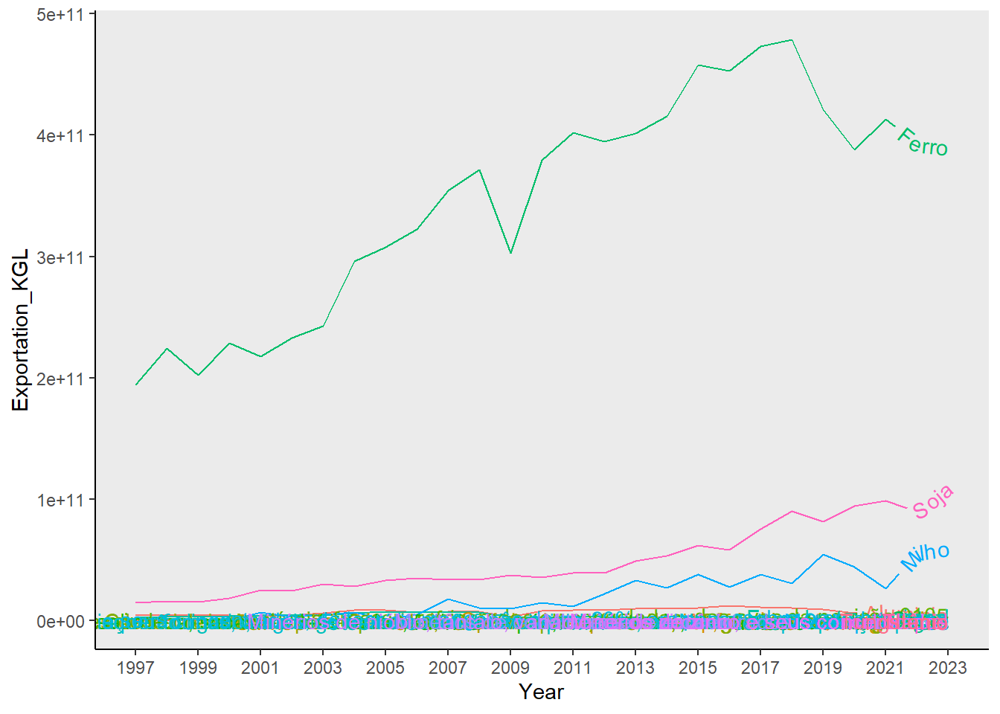
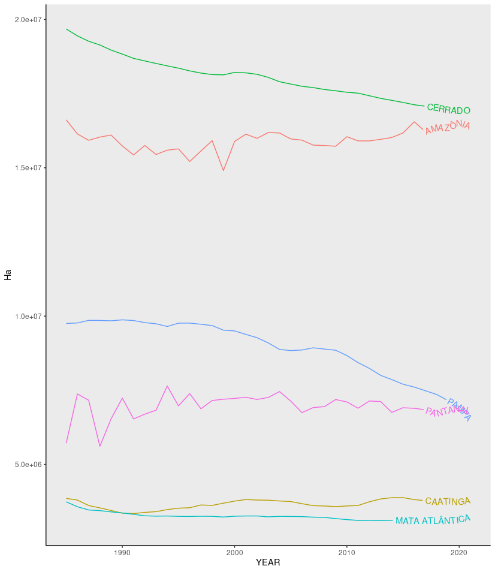

Levantamento dados exportação e LULC BR
Exportação brasileira (1997-2022)
Fonte: ComexStat (http://comexstat.mdic.gov.br/pt/home)
Produtos exportados em quilograma líquido ao longo dos anos
Exportação em quilograma líquido por estados e biomas em relação aos bloco econômicos de destino
Uso e cobertura da terra (1997-2021).
Fonte: MapBiomas coleção 7.1 (https://mapbiomas.org/estatisticas)
Antropização* por Biomas em hectare (1997-2021)
Antropização* = Agricultura, Pasto, Infra. Urbana, Mineração, Sivicultura, Aquicultura, Mosaico de Usos (agropecuária, quando não é possível definir se é pasto ou agricultura)
Formação Natural Não Florestal* em hectare por Biomas (1997-2021)

Transições de Formação Natural Não Florestal* para classes antrópicas nos biomas em hectare (1997-2021)
Transições de Formação Natural Não Florestal* para classes antrópicas nos municipíos em hectare (1997-2021)
ATENÇÃO: observar que é uma perspectiva que atribui a cor a partir da quantidade de hectares de transição nos municípios, o que não significa que obrigatoriamente todo o município passou por transição de Não Florestas para outras classes. No entando, a cor é atribuída para todo município e não somente em regiões onde de fato houve a transição.

Formação Natural Não Florestal* = Campo Alagado e Área Pantanosa | Formação Campestre | Apicum | Afloramento Rochoso | Restinga Herbácea
Mineração por biomas e municípios em hectare
ATENÇÃO: observar que é uma perspectiva que atribui a cor a partir da quantidade de hectares DA CLASSE nos municípios, o que não significa que obrigatoriamente todo o município está ocupado pela CLASSE em questão. No entando, a cor é atribuída para todo município e não somente em regiões ocupada por esta classe.

Mineração de ferro por biomas e municípios em hectare
Agricultura nos municipíos em hectare (1997-2021)

Pasto nos municipíos em hectare (1997-2021)